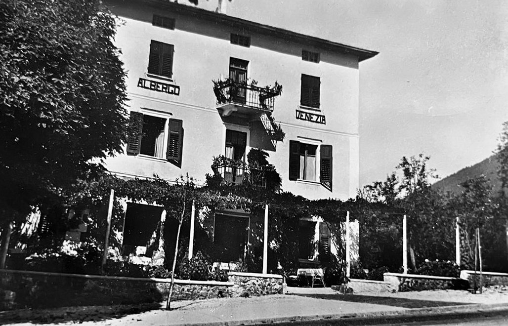

Chi siamo
Una delle pizzerie storiche di Levico Terme.
Il filò, in Trentino, era più un'abitudine che un luogo: la sera ci si trovava nelle stalle o attorno al fuoco, al caldo, a raccontarsi storie per far passare l'inverno.
Nel 1988 questo edificio ha smesso di essere l'Albergo Venezia ed è diventato una pizzeria, e da quella tradizione ha preso il nome, perché è ancora quello il motivo per cui si viene qui. Da allora sono passati quasi quarant'anni, e a due passi dalla stazione e dal Parco Asburgico El Filò fa sempre la stessa cosa.
Nell'estate del 2023 il locale è stato rimodernato, senza però cambiargli faccia: le travi a vista, le pareti e il pavimento in legno sono rimasti quelli di sempre, e i tavoli sono ancora grandi da condividere. Nella bella stagione si mangia in veranda.
Il fuoco, oggi, è il forno a legna. Accanto alla pizza classica trovi i nostri tre impasti speciali: canapa, carbone vegetale, cereali e semi. La maggior parte dei salumi e dei formaggi la prendiamo direttamente da malghe e piccoli produttori del territorio.
Scopri il menù


Le nostre tappe
Come lavoriamo